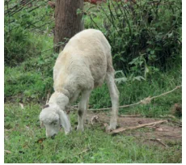

- Find the area of the dining table whose diameter is 105 cm.
- Calculate the area of the shotput circle whose radius is 2.135 m.
- A sprinkler placed at the centre of a flower garden sprays water covering a circular area. If the area watered is 1386 cm , find its radius and diameter.
- The circumference of a circular park is 352 m. Find the area of the park.

- In a grass land, a sheep is tethered by a rope of length 4.9 m. Find the maximum area that the sheep can graze.
- Find the length of the rope by which a bull must be tethered in order that it may be able to graze an area of 2464 m .
- Lalitha wants to buy a round carpet of radius is 63 cm for her hall. Find the area that will be covered by the carpet.
- Thenmozhi wants to level her circular flower garden whose diameter is 49 m at the rate of ₹150 per m . Find the cost of levelling.
- The floor of the circular swimming pool whose radius is 7 m has to be cemented at the
rate of ₹18 per m . Find the total cost of cementing the floor.
Objective type questions
- The formula used to find the area of the circle is sq.units.
- 4pr (ii) pr (iii) 2pr (iv) pr \(+ 2r\)
- The ratio of the area of a circle to the area of its semicircle is
- 2:1 (ii) 1:2 (iii) 4:1 (iv) 1:4
- Area of a circle of radius 'n' units is
- 2pr sq. units (ii) pm sq. units (iii) pr sq. units (iv) pn sq. units